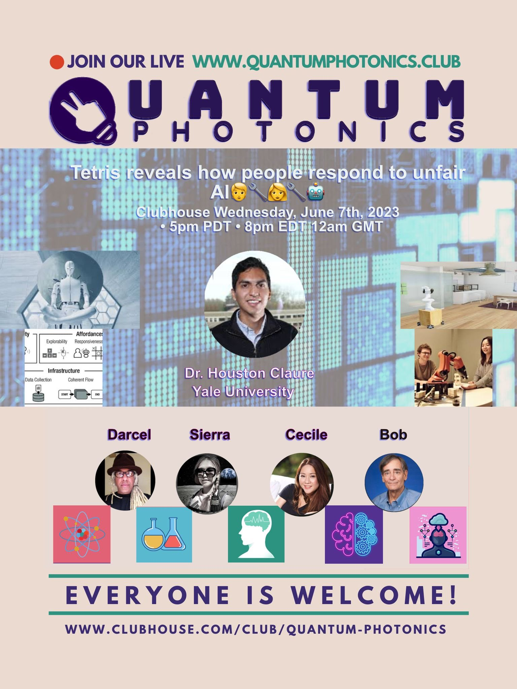

ACM/IEEE International Conference on Human-Robot Interaction (2020). This talk focuses on a novel reinforcement learning algorithm that enables robots to follow human notions of fairness when allocating resources. I presented my work at the Human-Robot Interaction Conference (HRI).

Quantum Photonics (2023). This talk focused on how AI can shape human perceptsion of one another. I discussed research topics around AI, robotics, and fairness.